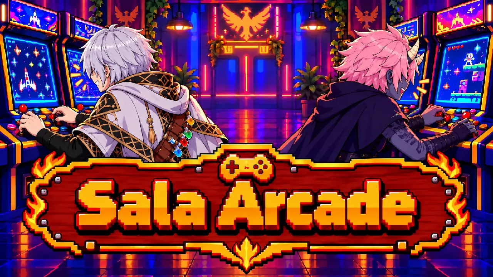
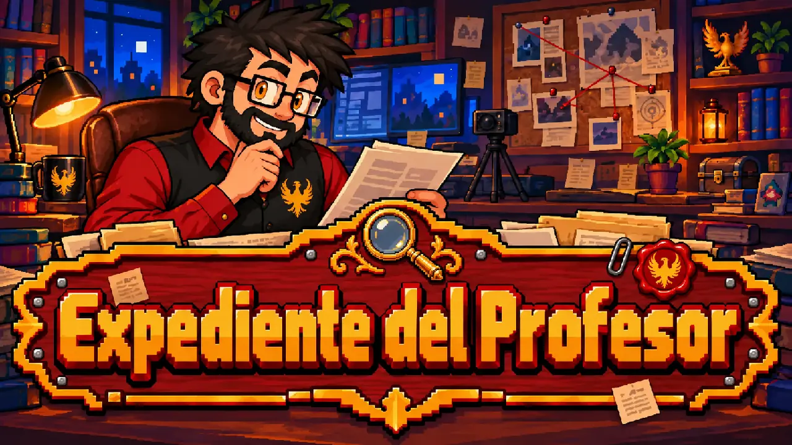

Donde jugamos, investigamos y aprendemos por qué el gaming llegó a ser lo que es.
Conoce a los miembros, fundadores y aliados de nuestra comunidad.
Explora análisis, tops, historias e investigaciones sobre videojuegos.
Aprende sobre gaming, programación y creación de contenido paso a paso.
Conoce a las mentes y visionarios que construyeron la historia del gaming.

Minijuegos, trivias y exámenes sorpresa.

Conoce a RickFen, el origen del Nido y la misión del Profesor.